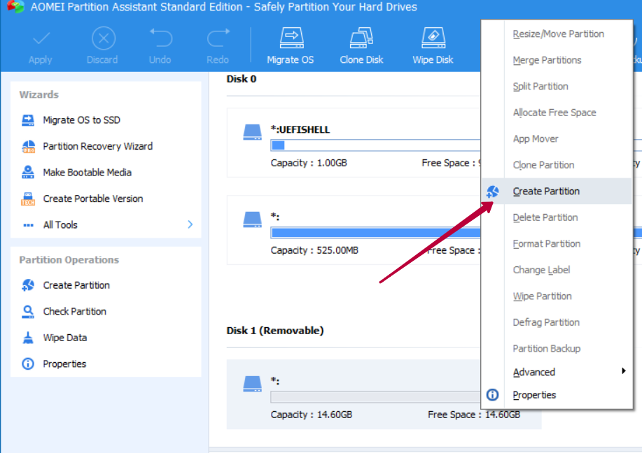

Установка Linux Kodachi
По этой инструкции вы сможете установить и настроить Linux Kodachi в двух вариантах: с зашифрованным разделом для информации и с полностью зашифрованной операционной системой.
Установка с зашифрованным разделом для данных
Способ описанный ниже позволяет поставить Linux Kodachi на флешку, при этом операционная система будет неизменяемая (все обновления и настройки будут стираться после перезагрузки) но будет доступен зашифрованный раздел для хранения информации.
Инструкция основана на описании на сайте Linux Kodachiopen in new window в разделе Persistence.
Скачать последнюю версию дистрибутива Linux Kodachiopen in new window.
Скачать программу для создания загрузочных дисков YUMIopen in new window.
Установите программу для разметки USB накопителя на разделы. Например, бесплатную AOMEI Partition Assistantopen in new window, далее скриншоты будут показаны из неё.
Разделите флешку на два раздела используя программу из пункта 3. Сначала удалите все разделы.
4.1 Создайте первый раздел и отформатируйте его в FAT32, назовите его LKOS (Linux Kodachi OS) и установить Primary Partition. Это будет диск для операционной системы.

4.2 Второй раздел отформатируйте так же в FAT32, и назовите LK0S (Обратите внимание что вместо буквы «O» используется ноль) и установить Logical Partition. Это будет диск для данных.
- Запустите программу YUMI. Выберите нужный USB-накопитель и iso образ системы и запустите установку.
Запустите Linux Kodachi с флешки используя настройки BIOS.
После запуска нажмите на кнопку в левом нижнем углу экрана и выберите в меню
Settings -> Disks. Выберите раздел разделLK0Sи отформатируйте его с отмеченным переключателемPassword protect volume (LUKS).
Зашифрованная операцонная система
Скачать последнюю версию дистрибутива Linux Kodachiopen in new window.
Скачать программу для создания загрузочных дисков Rufusopen in new window.
Запустите программу Rufus. Выберите нужный USB-накопитель и iso образ системы и запустите установку.
Запустите Linux Kodachi с флешки в режиме
Full RAM mode, режим выбирается при загрузке операционной системыНа рабочем столе запустите приложение
Install_Kodachi_Offline.desktop. Следуйте рекомендациям диалога установки системы.
5.1. Окно Welcome. Выберите язык системы
5.2. Окно Keyboard layout. Выберите раскладку клавиатуры
5.3. Окно Wireless. Не подключайте интернет, нажмите, Continue
5.4. Окно Update and other software. Оставьте без изменений.
5.5. Окно Installation type. Выберите Erase disk and install Linux и отметьте Encrypt the new Linux installation for security.
5.6. Окно Choose a security key. Установите пароль к зашифрованному разделу и отметьте переключатель Overwrite empty disc space.
5.7. Окно Erase disk and install Linux. Выберите в выпадающем диске флешку. Внимание! Неверный выбор сломает основную систему на устройстве. Может появится предупреждение об изменения на диске, нажимайте Continue.
5.8. Окно Where are you?. Пропустите окно.
- Окно
Who are you?. Введите пароль пользователя и установите переключатель в значениеRequire my password to log in.
Перезапустите систему.